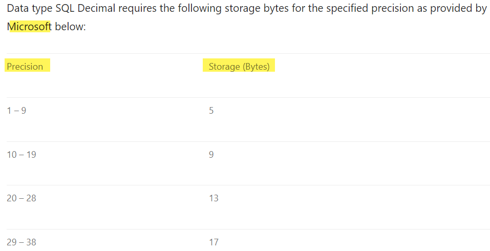
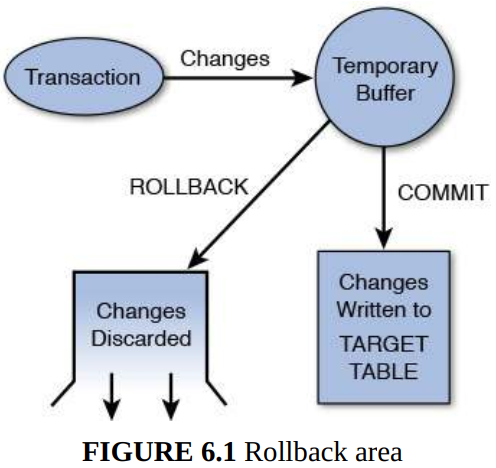
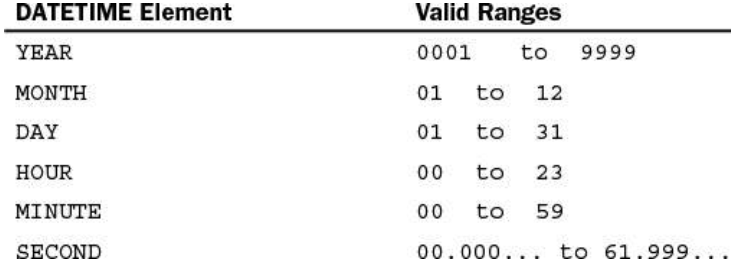
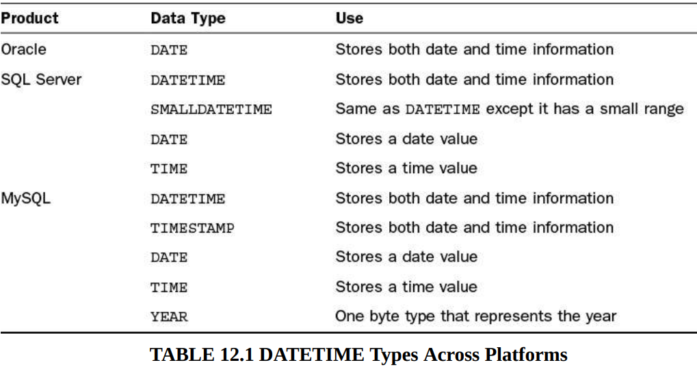
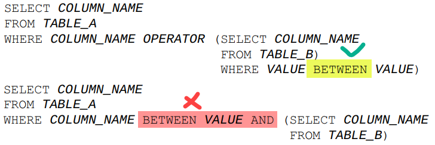
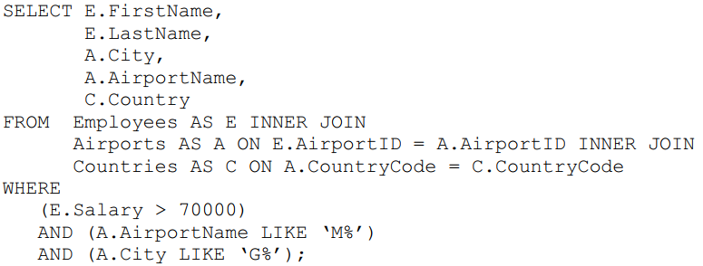
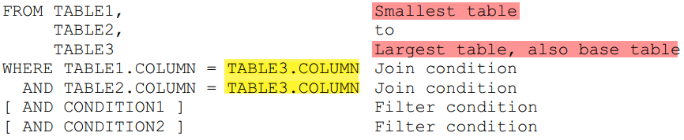
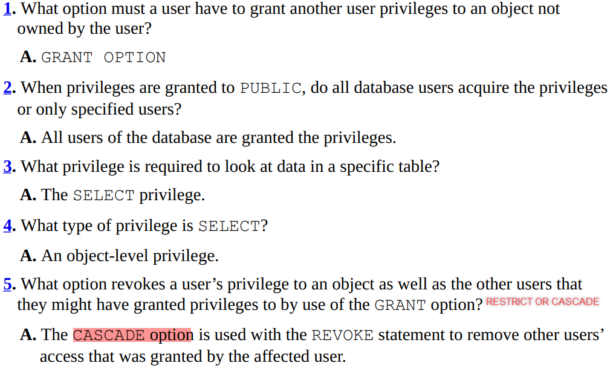

Part I: An SQL concepts Overview
Hour 1: Welcome to the World of SQL
Part II: Building Your Database
Hour 2: Defining Data Structures
Basic Data Types
Large Object Types
Numeric Types
Floating-Point Decimals
User-Defined Types
Hour 3: Managing Database Objects
Basic Statements
Integrity Constraints
Hour 4: Normalization
Normalization vs Denormalization
Hour 5: Manipulating Data
Hour 6: Managing Database Transactions
Part III: Getting Effective Results from Queries
Hour 7: Introduction to Database Queries
Hour 8: Using Operators to Categorize Data
(NOT) BETWEEN min AND max
(NOT) IN a List
(NOT) LIKE similar values
(NOT) EXISTS
ALL, SOME and ANY
Arithmetic Operators +, -, *, /
Hour 9: Summarizing Data Results from a Query
Hour 10: Sorting and Group Data
GROUP BY vs ORDER BY
CUBE and ROLLUP
The HAVING clause
Hour 11: Restructuring the Appearance of Data
Common Character Functions
Miscellaneous Character Functions
Conversion Functions
Hour 12: Understanding Dates and Times
Part IV: Building Sophisticated Database Queries
Hour 13: Joining Tables in Queries
Using a Base Table
Hour 14: Using Subqueries to Define Unknown Data
What is a Subquery?
Notes with subqueries
Tip: Using Subqueries for Unknown Values
Correlated Subqueries
Hour 15: Combining Multiple Queries into One
Compound Queries
ORDER BY with a Compound Query
GROUP BY with a Compound Query
Part V: SQL Performance Tuning
Hour 16: Using Indexes to Improve Performance
Types of Indexes
When Should Indexes Be Considered?
When Should Indexes Be Avoided?
Hour 17: Improving Database Performance
What Is SQL Statement Tuning?
Format Your SQL Statement
Formatting a Statement for Readability
Arranging Tables in the FROM Clause
Ordering Join Conditions
The Most Restrictive Condition
Other Performance Considerations
Part VI: Using SQL to Manage Users and Security
Hour 18: Managing Database Users
Hour 19: Managing Database Security
What Are Privileges?
System Privileges vs Object Privileges
The PUBLIC Database Account
Groups of Privileges
Controlling Privileges Through Roles
Part VII: Summarized Data Structures
Hour 20: Creating and Using Views and Synonyms
What Is a View?
Utilizing Views as a Form of Security
Utilizing Views to Maintain Summarized Data
Performance Impact of Nested Views
What Is a Synonym?
Hour 21: Working with the System catalog
What Is the System Catalog?
What Is Contained in the System Catalog?
Part VIII: Applying SQL Fundamentals in Today’s World
Hour 22: Advanced SQL Topics
Cursors
Opening a Cursor
Fetching Data from a Cursor
Closing a Cursor
Stored Procedures and Functions
Triggers
Dynamic SQL
Call-Level Interface
Hour 23: Extending SQL to the Enterprise, the Internet, and the Intranet
Hour 24: Extensions to Standard SQL
Part I: An SQL concepts Overview
Hour 1: Welcome to the World of SQL
Part II: Building Your Database
Hour 2: Defining Data Structures
Basic Data Types
- String
- Numeric
- Date and time
Fixed-Length Strings
SQL standard: CHARACTER(n)
Varying-Length Strings
SQL standard: CHARACTER VARYING(n)
VARBINARY: contains a variable length of bytes and is used to store some kind of digital data such as an image file.
Large Object Types
BLOB : is a binary large object and is useful to store binary media files such as images or mp3s
TEXT : can be treated as a large VARCHAR field and is useful to store large sets of character data such as HTML input from the entries of a blog site.
Numeric Types
SQL standard:
BIT(n)
BIT VARYING(n)
DECIMAL(p,s)
INTEGER
SMALLINT
BIGINT
FLOAT(p,s)
DOUBLE PRECISION(p,s)
REAL(s)
p: p means Precision. It represents a number identifying the allocated or max length of the particular field for each appropriate definition
s: s means Scale. It represents a number to the right of the decimal point
Decimal data type is a numeric data type used in SQL to represent fixed-point numbers.
Refer to this link to understand deeply about Decimal data type
The space consumption of SQL Decimal data type is based on the column definition and not on the size of the value being assigned to it.

DECIMAL(4,2)
→ max value: 99.99
→ space storage for each number: 5 bytes
Floating-Point Decimals
REAL : a data type for a column with single-precision, floating-point numbers. The precision must be between 1 and 21 inclusive is considered as a single-precision floating point.
DOUBLE PRECISION : a data type for a column with double-precision, floating-point numbers. The precision must be between 22 and 53 inclusive is considered as a single-precision floating point.
User-Defined Types
CREATE TYPE statement
Hour 3: Managing Database Objects
Basic Statements
CREATE TABLE
: can create new tables from an existing table by combining with SELECT statement
ALTER TABLE
: Attributes of a column refer to the rules and behavior of data in a column
: Modify these attributes of a column: data type/length, precision or scale/ can contain NULL
Integrity Constraints
PRIMARY KEY
UNIQUE
: a column with UNIQUE can be NULL
FOREIGN KEY
NOT NULL
CHECK
Hour 4: Normalization
Normalization vs Denormalization
- Which trade-offs?
Hour 5: Manipulating Data
INSERT
UPDATE
DELETE
Hour 6: Managing Database Transactions
COMMIT
ROLLBACK
SAVEPOINT

Part III: Getting Effective Results from Queries
Hour 7: Introduction to Database Queries
SELECT
FROM
WHERE
ORDER BY
Hour 8: Using Operators to Categorize Data
Operators are used with the WHERE clause of SELECT.
Comparison operators: =, <> / !=, >, <, >=, <=
Logical operators: IS NULL, BETWEEN, IN, LIKE, EXISTS, UNIQUE, ALL, SOME, ANY
Operators used to negate conditions
Arithmetic operators
(NOT) BETWEEN min AND max
- inclusive min and max
WHERE SEATING BETWEEN 200 AND 300
(NOT) IN a List
WHERE SEATING IN (200, 300, 400)
(NOT) LIKE similar values
2 wildcard operators:
- % : zero, one, or multiple characters
- _ : a single character or number
Find any values starting with B:
WHERE AIRCRAFTTYPE LIKE ‘B%’
Finds any values that have DOUGLAS in any position:
WHERE AIRCRAFTTYPE LIKE ‘%DOUGLAS%’
Finds any values that have ir in the second and third positions:
WHERE AIRCRAFTTYPE LIKE ‘_ir%’
Finds any values that start with A and are at least three characters in length:
WHERE AIRCRAFTTYPE LIKE ‘A_%_%’
Finds any values that end with 0:
WHERE AIRCRAFTTYPE LIKE ‘%0’
Finds any values that have a c in the second position and end with a 1:
WHERE AIRCRAFTTYPE LIKE ‘_c%1’
Finds any values in a five-digit number that start with 2 and end with 3:
WHERE AIRCRAFTTYPE LIKE ‘2___3’
(NOT) EXISTS
If a subquery returns ANY rows at all, EXISTS subquery is TRUE, and NOT EXISTS subquery is FALSE.
Detail here
SELECT DISTINCT store_type FROM stores s1 [1]
WHERE NOT EXISTS (
SELECT * FROM cities WHERE NOT EXISTS ( [2]
SELECT * FROM cities_stores [3]
WHERE cities_stores.city = cities.city
AND cities_stores.store_type = stores.store_type));
[3]’s result is exactly the table cities_stores
[2]’s result is the answer for the question: which cities that storeith does not present in?
[1]’s result is the answer for the question: which stores do appear in all cities.
Stores
| Cities
| Cities_Stores store_type | city | ST1 | CT1 | ST1 | CT2 | ST2 | CT1 | ST3 | CT1 | ST3 | CT2 | ST3 | CT3 |
|
[2]’s result
store_type | city |
ST1 | CT3 |
ST2 | CT2 |
ST2 | CT3 |
ST4 | CT1 |
ST4 | CT2 |
ST4 | CT3 |
ST1 does not exist in CT3
ST2 does not exist in CT2 and CT3
ST4 does not exist in CT1, CT2 and CT3
[1]’s result
ST3 does not exist in the table of [2]’s result. In other words, ST3 does appear/exist in all cities CT1, CT2 and CT3
ALL, SOME and ANY
The ALL operator is used to compare a value to all values in another value set.
SELECT *
FROM AIRCRAFT
WHERE SEATING > ALL ( SELECT SEATING
FROM AIRCRAFT
WHERE AIRCRAFTTYPE=‘Boeing 777’ );
SOME is as an alias for ANY
The ANY operator compares a value to any applicable value in the list according to the
condition.
SELECT s1 FROM t1 WHERE s1 <> ANY (SELECT s1 FROM t2);
SELECT s1 FROM t1 WHERE s1 <> SOME (SELECT s1 FROM t2);
<> SOME is an alias for <> ANY
b: the result from SELECT s1 FROM t2
The meaning, there is some b to which s1 is not equal. In other words, TRUE if there is at least one record from b that is different from s1.
<> ALL is an alias for NOT IN
Arithmetic Operators +, -, *, /
SELECT TRAVELTIME + 30 AS DELAY_TIME FROM ROUTES;
SELECT * FROM ROUTES WHERE (TRAVELTIME + 30) > 1080;
Hour 9: Summarizing Data Results from a Query
Functions are keywords in SQL used to manipulate values within columns for output purposes. A function is a command normally used with a column name or expression that processes the incoming data to produce a result.
The basic set of aggregate functions:
COUNT
SUM
MAX
MIN
AVG
Hour 10: Sorting and Group Data
Learn how to break returned data from a query into groups for improved readability using aggregate functions + GROUP BY
The selected columns (the column list following the SELECT keyword in the query) are the columns you can reference in the GROUP BY clause.
SELECT LASTNAME, FIRSTNAME
FROM EMPLOYEES
GROUP BY LASTNAME;
→ Error: The column EMPLOYEES.FirstName is invalid in the select list because it is not contained in either an aggregate function or the GROUP BY clause.
SELECT LASTNAME, FIRSTNAME
FROM EMPLOYEES
GROUP BY LASTNAME, FIRSTNAME;
→ NO ERROR
GROUP BY vs ORDER BY
- The GROUP BY clause is designed to group identical data, whereas the ORDER BY clause is designed merely to put data into a specific order. You can use GROUP BY and ORDER BY in the same SELECT statement, but you must follow a specific order.
- You can use the GROUP BY clause in the CREATE VIEW statement to sort data, but the ORDER BY clause is not allowed in the CREATE VIEW statement.
CUBE and ROLLUP
Rollup in MySQL
Cube is not supported in MySQL
The HAVING clause
- The HAVING clause when used with the GROUP BY clause in a SELECT statement tells GROUP BY which groups to include in the output.
- HAVING is to GROUP BY as WHERE is to SELECT
- WHERE clause places conditions on the selected columns, and HAVING clause places conditions on groups created by GROUP BY clause.
SELECT FROM WHERE GROUP BY HAVING ORDER BY | SELECT COLUMN1, COLUMN2 FROM TABLE1, TABLE2 WHERE CONDITIONS GROUP BY COLUMN1, COLUMN2 HAVING CONDITIONS ORDER BY COLUMN1, COLUMN2 |
E.g: Display only the cities that have an average salary equal to $71,000.
SELECT CITY, AVG(PAYRATE) AS AVG_PAYRATE, AVG(SALARY) AS AVG_SALARY
FROM EMPLOYEES
GROUP BY CITY
HAVING AVG(SALARY)=71000
ORDER BY 1;
Hour 11: Restructuring the Appearance of Data
Common Character Functions
In MySQL
CONCAT
UPPER
LOWER
SUBSTR
TRANSLATE
REPLACE
LTRIM
RTRIM
Miscellaneous Character Functions
LENGTH
ISNULL
LPAD (left pad)
RPAD (right pad)
ASCII
Mathematical Functions
In MySQL
ABS (Absolute value)
ROUND
SQRT
SIGN
POWER
CEIL/FLOOR
EXP
SIN, COS, TAN
Conversion Functions
These functions are used to convert a data type into another data type.
- Character to numeric
- Numeric to character
- Character to date
- Date to character
Hour 12: Understanding Dates and Times


Which datetime types should be used? You should consider the range of each type. For example, whether you choose timestamp or datetime in MySQL for storing birthdate? You should know the difference between timestamp and datetime like in detail here.
Date and Time functions in MySQL
Part IV: Building Sophisticated Database Queries
Hour 13: Joining Tables in Queries
- Inner joins or Equijoins
- Non-Equijoins
- Outer joins
- Self joins
- Cartesian Product (x) or Cross joins
Using a Base Table
What should you join on? Should you have the need to retrieve data from two tables that
do not have a common column to join, you must join on another table that has a common
column or columns to both tables. That table becomes the base table. A base table joins
one or more tables that have common columns, or joins tables that do not have common
columns.
Hour 14: Using Subqueries to Define Unknown Data
What is a Subquery?
- A subquery, aka a nested query, is a query embedded within the WHERE clause or HAVING of another query to further restrict data returned by the query.
- A subquery returns data that is used as a condition in the main query.
- Subqueries are employed with the SELECT statement and with a data manipulation statement such as INSERT, UPDATE, and DELETE statements.
- use logical and relational operators, such as: =, >, <, <>,!=, IN, NOT IN, AND, OR, and so on.
Notes with subqueries
- Cannot us an ORDER BY clause in a subquery, but can use the GROUP BY clause to perform the same functions as the ORDER BY clause in a subquery
- Cannot use the BETWEEN operator with a subquery, but can use the BETWEEN operator within the subquery. Weird? Try testing with your implementation (MySQL, Oracle, etc.)

Tip: Using Subqueries for Unknown Values
SELECT E.EMPLOYEEID,E.LASTNAME, A.AIRPORTNAME, E.SALARY
FROM EMPLOYEES E
INNER JOIN AIRPORTS A
ON E.AIRPORTID = A.AIRPORTID
WHERE E.SALARY=
(SELECT SALARY
FROM EMPLOYEES
WHERE EMPLOYEEID=3908);
Subqueries are frequently used to place conditions on a query when the exact conditions are unknown. The salary for 3908 in the previous example was unknown, but the subquery was designed to do the footwork for you.
Correlated Subqueries
- A correlated subquery is a subquery that is dependent upon information in the main query. This means that tables in a subquery can be related to tables in the main query.
Refer back to (NOT) EXISTS to see an interesting example.
- Consider that a subquery must be evaluated prior to the main part of the query, so the time that it takes to execute the subquery has a direct effect on the time it takes for the main query to execute.
Hour 15: Combining Multiple Queries into One
Compound Queries
- Using SET operators (UNION, INTERSECT, EXCEPT) to join the two queries.
- To use the SET operators, each SELECT statement must have the same number of columns selected, the same number of column expressions, the same data type, and the same order - but they do not have to be the same length.
UNION/ UNION ALL
- Return the output of two single queries
- ALL for displaying duplicate rows of a result
INTERSECT/ INTERSECT ALL
- Return identical rows between two queries
EXCEPT/ EXCEPT ALL
- Combines two SELECT statements and returns rows from the first SELECT statement that are not returned by the second SELECT statement. In other words, it returns the results of one query that do not exist in another query.
ORDER BY with a Compound Query
- Only use ONE the ORDER BY clause to order the results of a compound query.
SELECT COLUMN1 [, COLUMN2 ]
FROM TABLE1 [, TABLE2 ]
[ WHERE ]
OPERATOR{UNION | EXCEPT | INTERSECT | UNION ALL}
SELECT COLUMN1 [, COLUMN2 ]
FROM TABLE1 [, TABLE2 ]
[ WHERE ]
[ ORDER BY ]
GROUP BY with a Compound Query
Unlike ORDER BY, you can use GROUP BY in each SELECT statement of a compound query, but you also can use it following all individual queries. In addition, you can use the HAVING clause (sometimes used with the GROUP BY clause) in each SELECT statement of a compound statement.
SELECT COLUMN1 [, COLUMN2 ]
FROM TABLE1 [, TABLE2 ]
[ WHERE ]
[ GROUP BY ]
[ HAVING ]
OPERATOR {UNION | EXCEPT | INTERSECT | UNION ALL}
SELECT COLUMN1 [, COLUMN2 ]
FROM TABLE1 [, TABLE2 ]
[ WHERE ]
[ GROUP BY ]
[ HAVING ]
[ ORDER BY ]
Part V: SQL Performance Tuning
Hour 16: Using Indexes to Improve Performance
- An index is typically stored separately from the table for which the index was created.
→ Indexes do take up physical space
→ When new data is added to the table, an extra work/overhead needs to add entries to the index
→ modify data can negatively affect the performance of the operations
- Index typically stores information in an orderly tree-like format.
CREATE INDEX INDEX_NAME
ON TABLE_NAME (COLUMN_NAME)
Types of Indexes
1. Single-Column Indexes
- Single-Column indexes are most effective when used on columns that are frequently used alone in the WHERE clause as query conditions.
2. Unique Indexes
- Only work on fields that are unique and NOT NULL.
3. Composite Indexes
- A composite index is created when indexed fields are frequently used together as conditions in the WHERE clause of a query.
- The order of columns in the index should be considered carefully because it can have a measurable effect on the data retrieval speed. Refer to this stackoverflow link
- According to the book, it says that the order of the columns in the composite index is also important. The most selective column([1]) should be listed first, followed by the next most selective column, and so on. This can help to ensure that the index is used efficiently when searching for data.
Tip: In deciding whether to create a single-column index or a composite index, consider the column(s) that you might use frequently in a query’s WHERE clause as filter conditions. If only one column is used, choose a single-column index. If two or more columns are frequently used in the WHERE clause as filters, a composite index would be the best choice.
When Should Indexes Be Considered?
- Unique indexes are implicitly used with a primary key for the primary key to work.
- Foreign keys are also excellent candidates for an index because you often use them to join the parent table.
- Most, if not all, columns used for table joins should be indexed.
- Columns that you frequently reference in the ORDER BY and GROUP BY clauses should be considered for indexes.
- You should create indexes on columns with a high number of unique values, or columns that, when used as filter conditions in the WHERE clause, return a LOW percentage of rows of data from a table. This is where trial and error might come into play.
- Last but not least, try different combinations of indexes. There is no cut-and-dried rule for using indexes. The effective use of indexes requires a thorough knowledge of table relationships, query and transaction requirements, and the data itself.
When Should Indexes Be Avoided?
- Small tables
- Columns that return a HIGH percentage of data rows when used as a filter condition in a query’s WHERE clause.
- The performance of a batch job([2]) can be slowed considerably by the index because the index is also updated as the data is inserted, causing additional overhead. To solve this issue when running a batch job by dropping the index before the batch job and then re-creating the index after the job has completed.
- Columns that contain a HIGH number of NULL values.
- Columns that are frequently manipulated because the maintenance on the index can become excessive.
- Caution should be taken when creating indexes on a table’s extremely long keys because performance is inevitably slowed by high I/O costs.
Hour 17: Improving Database Performance
What Is SQL Statement Tuning?
- SQL statement tuning is the process of optimally building SQL statements to achieve results in the most effective and efficient manner.
- Mainly involve tweaking a statement’s FROM and WHERE clauses because mostly a database server evaluates a query based on these two clauses.
- Should read the document of the optimizer to follow tips
- Should investigate built-in tools such as a tool that shows the user the execution plan of a SQL statement or a tool that measures the actual elapsed time of a SQL statement.
Format Your SQL Statement
Formatting a Statement for Readability
- Should understand how the optimizer of your implementation works to effectively tune a SQL statement
- Some basic rules for making a statement readable follow:
- Begin a new line with each clause
- Use aliases when multiple tables are used in the statement
- Etc.

Arranging Tables in the FROM Clause
- It might be more beneficial to list the smaller tables first and the larger tables last
Ordering Join Conditions
- The column from a base table, which is used to link tables with one or more common columns on which to join, is normally placed on the right side of a join operation in the WHERE clause
- The tables joined to the base table are normally in order from smallest to largest
- If a base table doesn’t exist, the tables should be listed from smallest to largest, with the largest tables on the right side of the join operation in the WHERE clause
- The join conditions should be in the first position(s) of the WHERE clause followed by the filter conditions

The Most Restrictive Condition
- The condition that is most likely to eliminate the largest number of rows should be placed first in the WHERE clause.
- The most restrictive clauses should be evaluated before the join conditions because join conditions normally return a large number of rows
Other Performance Considerations
- Using the LIKE operator and wildcards (%, _)
- Using IN predicate instead of the OR operator
- If possible, you should write SQL statements without using the HAVING clause
- Avoiding large sort operations[3] because they are very resource-intensive and time-consuming
- A large dataset must be stored in memory. If the dataset is too large, the system must use its disk to swap data between memory and disk. This leads to slow down the system and other queries can be also affected and timed out.
- In addition, soring a too much data is a very expensive operation in terms of using CPU.
- It is best to schedule queries with large sorts during off-peak database usage so that the performance of most user processes is not affected
- Can apply the strategy ‘drop and rebuild indexes’
Part VI: Using SQL to Manage Users and Security
Hour 18: Managing Database Users
There are three necessities for managing users in the database.
- First, you must create database user accounts for the proper individuals and services.
- Second, you must grant privileges to the accounts to accommodate the tasks that must be performed within the database.
- Finally, you must either remove a user account from the database or revoke certain privileges within the database from an account.
Hour 19: Managing Database Security
What Are Privileges?
- Privileges are authority levels used to access the database, access objects within the database, manipulate data in the database, and perform various administrative functions within the database. In other words, privileges are permissions that determine what actions a user can perform on a database object.
- Privileges can be granted to users or roles
System Privileges vs Object Privileges
- System privileges refer to permissions that allow a user to perform certain actions within the entire database system. These actions include creating a database, creating a user, or backing up the database. System privileges are granted to users by database administrators and are not specific to any particular object within the database.
- On the other hand, object privileges refer to permissions that allow a user to perform certain actions on a specific object within the database (database objects), such as a table or view. These actions include selecting, updating, or deleting data from the object. Object privileges are granted to users by the owner of the object or by a user with the appropriate system privileges.
The PUBLIC Database Account
- The PUBLIC database user account is a database account that represents all users in the database.
- Caution: PUBLIC privileges can grant unintended access
Groups of Privileges
Controlling Privileges Through Roles

Part VII: Summarized Data Structures
Hour 20: Creating and Using Views and Synonyms
What Is a View?
- A view is a virtual table or a stored query. That is, a view looks like a table and acts like a table as far as a user is concerned, but it doesn’t require physical storage.
- A view is considered a database object, although it is stored in memory only. It takes up no storage space as do other database objects—other than the space required to store the view definition.
- A view does not contain data
- The view’s creator or the schema owner owns the view. The view owner automatically has all applicable privileges on that view and can grant privileges on the view to other users, as with tables.
Utilizing Views as a Form of Security
Utilizing Views to Maintain Summarized Data
Performance Impact of Nested Views
- The more layers (of views) you have, the more the query engine has to work to come up with an execution plan.
What Is a Synonym?
- A synonym is an alternative name for an object in a database, such as a table, view, or stored procedure.
Hour 21: Working with the System catalog
What Is the System Catalog?
- The system catalog (aka data dictionary) is a collection of tables and views that contain important information about a database.
- A system catalog is available for each database.
- Information in the system catalog defines the structure of the database and information on the data contained therein. For example, the Data Definition Language (DDL) for all tables in the database is stored in the system catalog.
- In other words, a system catalog is a collection of metadata that describes the structure of a database. It contains information about the tables, columns, indexes, and other objects that make up the database.
What Is Contained in the System Catalog?
The system catalog contains information such as the following:
- User accounts and default settings
- Privileges and other security information
- Performance statistics
- Object sizing
- Object growth
- Table structure and storage
- Index structure and storage
- Information on other database objects, such as views, synonyms, triggers, and stored procedures
- Table constraints and referential integrity information
- User sessions
- Auditing information
- Internal database settings
- Locations of database files
The database server maintains the system catalog. For example, when a table is created, the database server inserts the data into the appropriate system catalog table or view. When a table’s structure is modified, appropriate objects in the data dictionary are updated.
Part VIII: Applying SQL Fundamentals in Today’s World
Hour 22: Advanced SQL Topics
Cursors
- A cursor is a mechanism that allows you to traverse through the rows of a result set one at a time. It is similar to a pointer in programming languages.
- When you execute a query that returns multiple rows, the database server creates a result set that contains all the rows that match the query. A cursor allows you to access the rows in the result set one at a time, and perform operations on them as needed.
Opening a Cursor
You cannot access a cursor until you have opened it. When a cursor is opened, the specified cursor’s SELECT statement is executed, and the results of the query are stored in a staging area in memory.
Fetching Data from a Cursor
You can retrieve the contents of the cursor (results from the query) through the FETCH statement after you open the cursor.
How to handle the cursor when fetching to the last item/row? Referring to the document of each particular implementation.
Closing a Cursor
The result set for the cursor is contained in memory until the cursor is closed and the memory is deallocated.
Stored Procedures and Functions
- A stored procedure is a group of one or more SQL statements or functions that are stored in the database, compiled, and ready to be executed by a database user. A stored function is the same as a stored procedure, but a function returns a value.
- A stored procedure is precompiled and stored in the database server's memory. When a stored procedure is executed, the database server retrieves the precompiled code from memory and executes it.
- Stored procedures can also be stored on disk, but they are typically loaded into memory when they are executed.
Triggers
- A trigger is a special type of stored procedure that is automatically executed in response to certain events or changes in a database. Triggers are typically used to enforce business rules, maintain data integrity, or perform complex calculations.
- Triggers can be defined to execute either before or after a specific event, such as an insert, update, or delete operation on a table. For example, you could define a trigger to automatically update a summary table whenever a new row is inserted into a related table.
Dynamic SQL
- Dynamic SQL allows a programmer or end user to create a SQL statement’s specifics at runtime and pass the statement to the database. The database then returns data into the program variables, which are bound at SQL runtime.
- Although dynamic SQL provides more flexibility for the end user’s query needs, the performance might not compare to that of a stored procedure whose code has already been analyzed by the SQL optimizer.
Call-Level Interface
A call-level interface (CLI) embeds SQL code in a host program, such as ANSI C.
Hour 23: Extending SQL to the Enterprise, the Internet, and the Intranet
Hour 24: Extensions to Standard SQL
[1] The most selective column is the column that has the most distinct values. When we say a column is selective, we mean that it can be used to filter out a large number of rows from a table. In this context, restrictive is also the same meaning selective.
[2] A batch job is a program or script that is designed to process a large amount of data in a single run. Batch jobs are typically run on a regular schedule, such as daily or weekly, and are used to perform tasks such as data backups, data imports, and data exports.
[3] Using the ORDER BY, GROUP BY, and HAVING clauses